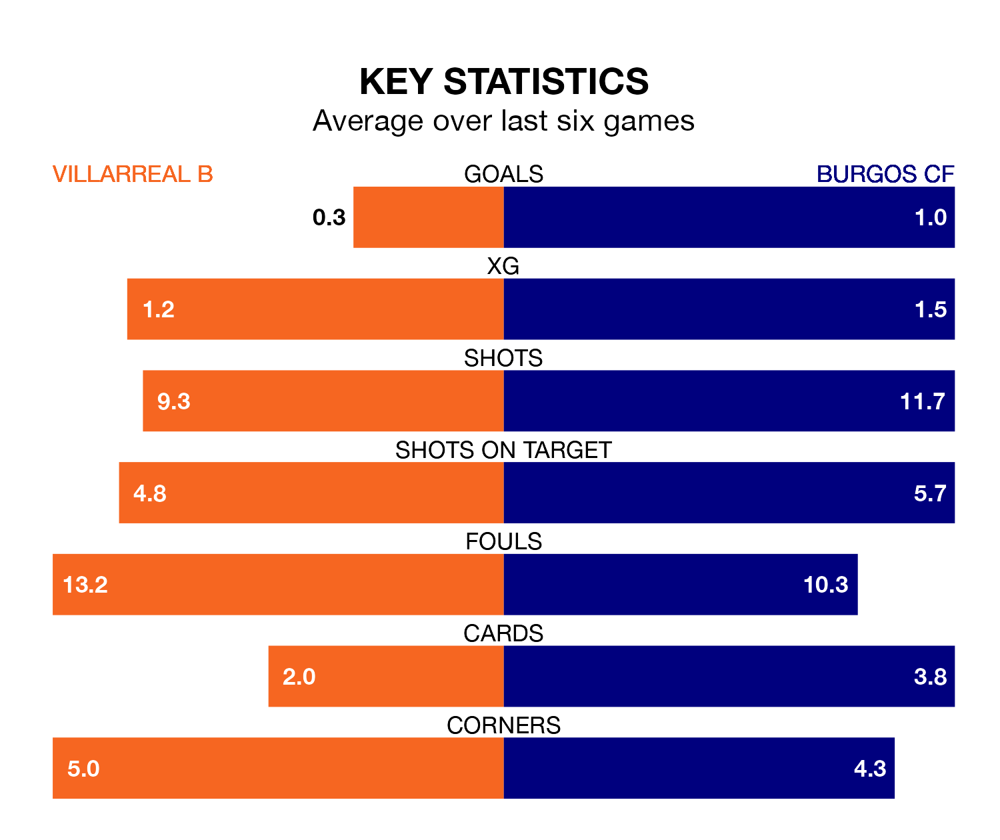

Villarreal B welcome Burgos CF to Estadio de la Cerámica on Sunday looking to pick up points to end their five-game losing streak.
Villarreal B's struggles have left them with just one point from their last six Segunda División matches, while their opponents have earned 11 from a possible 18.
Villarreal B are bottom of the table after 33 games, of which they have won seven and drawn nine, earning 30 points.
Burgos are 13 places ahead of the hosts in ninth, with 14 wins and eight draws putting them on 50 points.
With 30 goals in 33 games so far this season, Villarreal B are scoring at below the league average rate with 0.9 goals per game. And they are conceding more than average, letting in 50 goals at a rate of 1.5 per game.
The away team, meanwhile, are above average scorers, with 1.2 goals per game, compared to a league average of 1.1. They have also conceded 1.2 goals per game.
With José Antonio Caro Díaz between the sticks, Burgos can rely on one of the league's safest pair of hands. He has kept 14 clean sheets in his 33 appearances this season, and only two other 'keepers – SD Huesca's Álvaro Fernández and Leganés's Diego Conde – have been able to prevent the opposition scoring on more occasions in the Segunda División.
In Villarreal B's net, Iker Álvarez has five clean sheets in 23 games. He has conceded a goal every 71 minutes, 10% more often than the 78 minutes between goals for Caro Díaz.
In the last three years, Villarreal B and Burgos have played each other on three occasions. Burgos won two of them and they drew once.
Their last meeting was on October 15, when Burgos won 3-2 at home.
Villarreal B's last match was on Sunday, a 2-1 loss against Real Oviedo, with Javier Ontiveros Parra getting the goal for Villarreal B.
Burgos drew 0-0 with RCD Espanyol last time out, on March 29.
Updated: 16:41 (UTC), 04/04/24